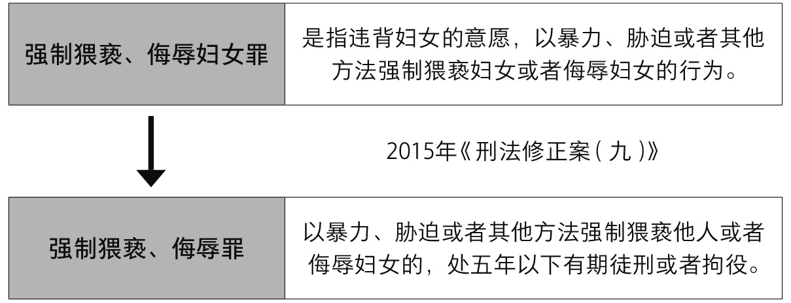
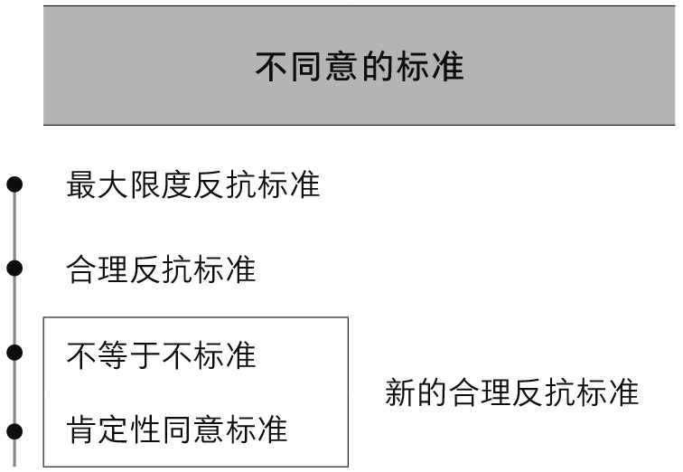
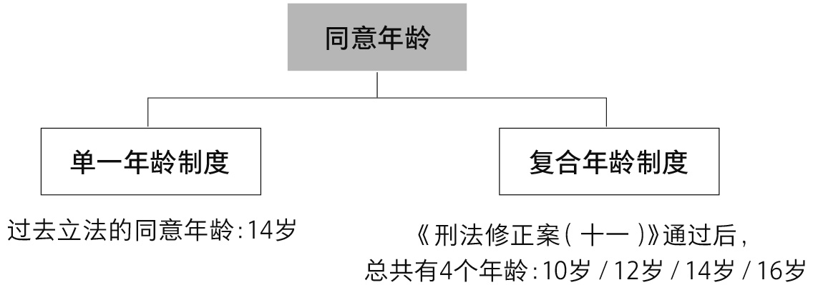

我从2003年做博士论文的时候，开始从事“性侵犯罪中的同意问题”这方面的研究，到现在快20年了。
当时为什么会选择这个题目呢？因为那段时间社会上出现了一系列跟性侵有关的热点案件，社会公众跟法律界之间产生了巨大的割裂，于是这就让我开始去反思。随着研究的深入，我接触到了女权主义法学的一些观念，这些观念让我感到非常震撼，甚至可以用振聋发聩来形容。
1984年，女权主义法学家麦金农（Catharine Alice MacKinnon）说过这样一句话：“人类社会一切两性之间的性行为全都是强奸。”因为在男女不平等的情况下，女性根本无法给予自主的同意，一切的同意不过是虚与委蛇。
这句话真的太刺耳了，但是刺耳让我开始反思自己对于性侵犯罪是否存在偏见。我们每个人都生活在偏见之中，我们有出身的偏见、种族的偏见、地域的偏见、性别的偏见，而法律的一个重要功能，就是在各种偏见中寻找一种平衡之道，在各种对立的利益中寻找出一种合乎中道的恰如其分。
在我国刑法中，性侵犯罪包括很多犯罪，主要有强奸罪、强制猥亵罪、侮辱罪、猥亵儿童罪。性侵犯罪中的核心问题，其实是不同意问题。
但是在我国的司法实践中，长期以来使用的是“违背意志”这个说法。“强奸”是“违背妇女意志与其发生关系”。不难发现，“违背意志”更多地带有心理学的成分，与法律所谈的规范性是不一样的。
多年以前有一个非常经典的案件。一个农妇提着一篮子鸡蛋去感谢大夫，因为大夫治好了她丈夫多年的顽疾。但是大夫一看说：“我还缺鸡蛋吗？你如果真的想感谢我，来点实际的好不好？”农妇问：“那怎么感谢你？”大夫说：“寡人有疾，寡人好色。”农妇说：“我也不是随便的人，但是没办法，毕竟你治好了我的丈夫，只此一次，下不为例。”在这个案件中，有没有违背女方的意志呢？我想可能是违背了。但她是同意还是不同意呢？似乎她是同意了。
这就是为什么我认为在刑法中，应该使用更为规范的概念“不同意”，而不要再使用心理学上的概念“违背意志”。在人类生活中，比如性交易案件中，性工作者在接客的时候似乎也是违背意志的，但是在法律中依然认为是同意的。
同意不是一个单纯的事实问题，而是一个价值判断问题。在某种意义上，作为法律人，我们眼中永远只有价值问题，没有纯粹的事实问题，或者说你根本找不到一个没有价值判断的事实问题。
人从什么时候开始？有同学说，从出生时开始。到什么时候结束？到死亡时结束。那什么又叫出生呢？有很多种学说，有阵痛说，有脱离母体说，有全部露出说，有部分露出说，不同的学说得出的结论不一样。人的结束、死亡同样有价值判断，有心脏停止跳动说，有脑死亡说。
所有的法律概念都存在价值判断，同意也一样，它要承载体现法律所倡导的公平和正义。
在世界范围内，关于不同意的标准大致有四种立场。第一种立场是人类最古老的一种立场，叫“最大限度反抗标准”。
2016年，新泽西州最高法院有一个法官因为言语不当，最后被撤职。当时他对当事人是这么说的：“你怎么可能被强奸呢？夹紧腿就不会被强奸。”我们会发现，这样的偏见存在于很多人的内心深处，很多人都觉得如果你极力地反抗，怎么可能被强奸呢？所以无论中外，最大限度反抗标准在很长一段时间都是一种主流立场。
在很长一段时间，女性并没有独立的人格地位，她只是丈夫或者父亲的一种财产，贞操被认为是高于生命权的。在这种背景下，女性为了表明她的不同意，必须进行最大限度的反抗。这种最大限度的反抗可能是身体上的极力阻挡，或者是衣服上的撕裂。如果没有进行这种最大限度的反抗，在法律中就要被认为是同意。
不过在很长一段时间，法律中是存在通奸罪的，最高刑是死刑。通奸是男女同罪的，而强奸只有男性构成犯罪，在当时的背景下，司法人员非常害怕本来是通奸的女性，为了让自己不承担责任，而把罪责往男性身上推。
所以在普通法系有着黑尔爵士的著名警告：“强奸是一种很容易被指控，但很难被证明，被告也很难抗辩的案件。”这句话的本土化表达，就是大家非常熟悉的“自古奸出妇人口”。
1906年，美国威斯康星州有一个著名的布朗案（Brown v. State）。16岁的小姑娘在去祖母家的路上，被20岁的邻居布朗绊倒在地，布朗强压在她身上，用手捂住她。她拼命大叫，拼命想爬起来，最后还是被性侵。法官受理案件后，认为小姑娘根本没有表达出自己的不同意，因为她没有进行最大限度的身体反抗，因此认为被告是无罪的。
但是随着女性地位的提高，也随着通奸罪的废除，强奸罪不再被认为是一种侵犯风俗的犯罪，而被认为是一种侵犯女性性自治权的犯罪，于是“最大限度反抗标准”开始过渡到“合理反抗标准”。
“合理反抗标准”不再要求女性进行最大限度的身体反抗，她只要进行合理的反抗就可以表示不同意。
经典案件是1979年美国纽约州的电梯强奸案（People v. Dorsey），被害人41岁，身高1米52，下午6点下班的时候回到自己所住的公寓。在电梯间她碰到了被告道舍，15岁，身高1米72，重90公斤。两人身体力量的差距是显而易见的。
道舍控制电梯停在了楼层的夹层，然后让这位女性把衣服脱了。她当时呆了一下，然后道舍呵斥“脱衣服”，她就把衣服脱了，全程没有反抗，道舍也没有使用身体上的暴力威胁。唯一的威胁是事成之后，道舍对女方说：“你别报警，如果报警，小心我的兄弟来修理你。”
法官在这个案件的审理过程中就觉得，双方体形相差悬殊，而且在电梯这样密闭的空间，女方是孤立无援的，所以女方没有反抗是合理的，这就是所谓的合理反抗标准。
但什么是合理呢？合理反抗是用男性的标准来要求女性，还是用女性的标准来要求女性呢？哭泣和拒绝是不是一种合理反抗呢？男女是平等的，但是男女在生理、心理上可能又有不同。
随着女权主义法学的突飞猛进，在很多女权主义者看来，强奸罪这个罪名本身就是对男尊女卑文化的一种认可，它认可了男性在性行为中的积极主动和女性的消极被动，觉得这是一种偏见。无论是中文“强奸罪”还是英文“Rape”，他们都认为这个罪预设了女性是被害人。所以女权主义者们主张一种性别中立主义的立法，把“强奸罪”修改为没有性别特点的“性侵犯罪”“性攻击罪”，以及“犯罪性性行为罪”。
表面上大家会发现，这确实是为了尊重女性的权益，但是如果完全采取性别中立主义立法的话，那我们也就可以对男性和女性采取同样的标准，它导致的后果可能不一定是对女性有利的。
我国也采取了性别中立主义立法的某些成果，一个突出的体现就是2015年《刑法修正案（九）》，把“强制猥亵、侮辱妇女罪”修改成“强制猥亵、侮辱罪”，也就是男性也可以是侮辱的对象。

但是如果你仔细去读法条，会发现有一个不一样的地方，因为法条文的表达是强制猥亵他人，“他”既包括男的又包括女的，但是侮辱的背后依然是妇女，也就是说猥亵的对象可以是男的也可以是女的，但是侮辱的对象依然是女性，而不能是男性。
比如张三跟女生吵架，把她上衣扯了下来，构成强制侮辱。但是张三和男生吵架，把他上衣扯下来，就不构成强制侮辱。
我想说的是，性别中立主义立法，在很大程度上只具有一种符号作用，因为即便采取性别中立主义立法的美国，统计数据显示，性侵犯罪的被害人九成以上，甚至99%都是女性。所以性侵犯罪是一类非常独特的犯罪，它是人类中的一性对另一性的欺凌。
因此，我们在理解不同意问题的时候，一定要开启女性视野，法律不能用男性的标准来要求女性。虽然男女有别，但是合理的区别对待，也是法律正义的一种表达。
时代推动不同意的标准进化出第三种类型，叫“不等于不标准”，就是“No Means No”，说“不”就意味着不同意。
1992年，美国发生了一件非常令人震惊的案件。威尔森是一位25岁的女艺术家，有一天晚上被告瓦尔德破门而入，欲行不轨，这个女孩子就逃到了浴室。瓦尔德把浴室的门给砸了，对威尔森实施了性侵。在性侵之前威尔森对瓦尔德说：“你能不能够戴上安全套？”男的同意了。审理案件的法官认为，因为威尔森让瓦尔德戴上安全套，这就表明她对性行为是同意的，所以最终认为男方无罪。
这个案件震惊了世界，很多男性可能内心深处都认为女方说“不”，只是一种象征性反抗，女方说“不”，只是半推半就。但是女权主义者认为，这样一种偏见是否合理呢？如果一个人已经明确说了“不”，你为什么不能尊重她语言的表达呢？
所以法律慢慢地开始革新，人们开始认为，即便一个男性真诚地认为，“不等于是”，法律也要抛弃这种花花公子式的哲学。你必须要为你的偏见付出代价，说“不”就意味着“不”，“No Means No”。
这种观点在1991年的拳王泰森强奸华盛顿案中得到体现。有一次，泰森给选美比赛当评委，最后评出的选美小姐是18岁的德斯雷·华盛顿。选美比赛结束之后，泰森就邀请华盛顿共进晚餐，双方吃了一顿豪华大餐，然后在泰森的豪车上兜风，在车里泰森跟华盛顿有过亲吻行为。凌晨，到了泰森下榻的酒店，泰森邀请华盛顿到房间坐会。华盛顿同意了，双方坐一起看了很久的电视。过一会儿，华盛顿去洗手间，出来的时候泰森脱光了衣服，强行和华盛顿发生关系。
自始至终泰森并没有强烈的身体暴力，女方也没有明显的身体反抗。但是证词显示女方有语言上的拒绝，泰森无视华盛顿的哀求，和华盛顿发生了性行为。事发之后女方立即到医院去做检查，并在三天之内向警察报案，控诉泰森性侵。
泰森申辩道，华盛顿和他吃饭，坐他的车，和他亲吻，凌晨还进房间一起看电视，这不就是同意吗？但最后法官认为，女方已经明显在语言上说了“不”，根据不等于不标准，女性的语言应该受到尊重，因为她是一个理性的人，当她说了“不”，你的行为就过界了，你就应该停止。
即便你真诚地认为说“不”意味着“是”，这也只是一种偏见。语言或哭泣这些消极反抗，应该被视为一种合理的反抗，这是不等于不标准。
现在又出现了一种更为新颖的标准，叫“肯定性同意标准”。如果说“不等于不标准”是“No Means No”，那“肯定性同意标准”就是“Yes Means Yes”，只有表达肯定性的同意才能在法律上被视为同意，而沉默则要被视为一种拒绝的意思表示。
“肯定性同意标准”比“不等于不标准”的打击面要更宽一些。我曾经碰到过一个案件，有一个职业培训学校的学生学习压力很大，一男一女就谈恋爱了，用恋爱来对抗枯燥的学习。谈了一个月之后，女生发现不能再谈下去了，再谈下去肯定考不过，所以决定分手。双方跟平常一样约会、吃饭、看电影。结束时，女生对男生说：“我们分手吧，好好学习考完试，有缘再谈。”
男生一下都懵了，一宿没睡，第二天天还没有亮，就开车去女生宿舍，把女生叫了下来，一把拽到车里，然后开到一个偏僻的地方。那时候是夏天，男生只穿了一条短裤，他把裤头一扯，然后把女生的裙子也扯下来了。女生一个耳光打过去，骂他臭流氓。男生被打醒了，给女生跪下，说对不起，不停道歉。
问题是，男生构成犯罪吗？这个案件的关键，就是在区分“犯罪中止”和“求欢未成”两组概念。
如果我们采取肯定性同意标准，只有女方说“是”才表达同意，而沉默要被视为一种拒绝的意思。那么在这个案件里，男方的性质就是在强奸的过程中、在犯罪的过程中自愿放弃，属于犯罪中止。
虽然法律规定，犯罪中止应当减轻或免除处罚，但是在档案上他依然要被记载是犯罪分子，是受过刑事处罚的人，不可能再从事很多职业。男生最后被判处有期徒刑两年，也就没有必要再参加职业考试了。事实上，女生最后也没参加考试，她当时只是想吓吓他，也不想让他真去坐牢的。
假如我们采取不等于不标准，只有女方说了“不”才表达她的不同意，在没有说“不”之前，只是一种人类的交往活动，那么这个案件就是求欢未成，可能属于交往不当的行为，但是没有上升到犯罪领域。
所以，采取肯定性同意标准，是不是有一点打击过度呢？张三和李四谈恋爱，然后张三趁李四不注意“啪”亲了一口，按照肯定性同意标准就属于强制猥亵，女方都没有表达肯定性的同意，你居然亲她！
肯定性同意标准当然有合理的成分，但它更多地指向一种道德上的自律。从道德的角度来说，你想要亲吻对方是要征求对方同意的，甚至你牵手都要问过对方。但是，刑法只是对人最低的道德要求，所以在认定性侵犯罪的时候，我们主要采取的是不等于不标准。但在迷奸案件中，当女方喝多了，人事不省，她根本不可能说“不”了，在这种情况下是可以采取肯定性同意标准的。
人类事务真是太复杂了，我们很难用一个标准解决所有问题，很多时候是多个标准纠缠在一起。我认为我们可以把“不等于不标准”和“肯定性同意标准”合二为一，我把它称之为“新的合理反抗标准”。
我国的司法解释规定，在判断女方不同意时，主要依据反抗，判断男方是否采取了暴力威胁或其他方法，使得女方不能反抗、不知反抗和不敢反抗。而这里的不能、不知和不敢，其实我觉得也就是新的合理反抗标准。
总之，在理解不同意问题的时候，我们一定不要开启男性视野。因为强奸罪绝大多数的被害人都是女性，所以一定要从女性的角度去思考什么叫做“不同意”。

性同意还有一个相关的问题就是同意年龄。“同意”跟理性能力是有关的，如果你根本没有理性的能力，你也谈不上同意。这就是为什么和小朋友或精神病人发生性行为肯定是构成强奸的，因为他没有同意的能力。
在关于性同意年龄的问题上，存在两种针锋相对的哲学立场：一种是自由主义，一种是家长主义。自由主义认为应该降低同意年龄，甚至没有必要设同意年龄，因为设定同意年龄其实就限制了幼女的性自由，就没有人敢和她发生关系了。
与此相对的立场是家长主义。家长主义认为很多时候法律要像家长一样，对个人自由进行必要的约束，这种约束是为了你好，如果自由不受限制，一定会导致强者对弱者的剥削。
我们知道，人的生理与心理发展有可能是不同步的，一个人可能身体发育成熟，但是在心理上完全还是懵懂无知。尤其是当下，身体发育早于心理发育的这部分孩子，最容易成为年长男性剥削的对象。所以，世界各国的一个普遍的做法是提高性同意年龄，避免幼女、少女成为男性剥削的对象。
但是同意年龄应该如何设置呢？世界范围内关于同意年龄有两种立场：一种是单一年龄制度，只设一个年龄；还有一种是复合年龄制度，设置多个年龄。
我国过去在立法上采取的是单一年龄制度——14岁。跟不满14岁的女孩发生关系，构成强奸罪，如果是男孩，构成猥亵儿童罪。现在很多国家开始采取复合年龄制度，普通法系一般都是复合年龄制度，它通常分为两个年龄，年幼的未成年人和相对年长的未成年人。
比如美国的《模范刑法典》就规定了两个年龄，一个是10岁，一个是16岁。跟不满10岁的小孩发生关系是二级重罪，而跟10到16岁的孩子发生关系是三级重罪，二级重罪的刑罚要远远重于三级重罪。另外一个重要的区别是，跟不满10岁的孩子发生性关系，是无法以年龄认识错误作为辩护理由的，人人都能辨认出10岁以下的孩童特征，但是10至16岁的区间就允许年龄上的辩护理由，“我确实不知道她不满16岁”这种辩护理由是可以提出的。
除此之外，还有第二种分类，区分为普通的年龄和具有信任关系的年龄。还是以美国《模范刑法典》为例，除了10岁和16岁，居然还规定了一个很高的年龄是21岁。《模范刑法典》认为16岁至21岁区间的女性，如果她和具有信任地位的男性发生关系，比如说老师和学生，监护人和被监护人，这时的同意是无效的，因为男方滥用了他的影响力，滥用了他的信任地位，因此同意无效。所以在美国，师生恋是构成强奸罪的。
我国虽然之前采取的是单一年龄，但是有许许多多的个案对法律都起到了潜移默化的调整作用。
2013年，我们通过了《关于依法惩治性侵害未成年人犯罪的意见》，第十九条规定：“知道或者应当知道对方是不满十四周岁的幼女，而实施奸淫等性侵害行为的，应当认定行为人‘明知’对方是幼女。对于不满十二周岁的被害人实施奸淫等性侵害行为的，应当认定行为人‘明知’对方是幼女。对于已满十二周岁不满十四周岁的被害人，从其身体发育状况、言谈举止、衣着特征、生活作息规律等观察可能是幼女，而实施奸淫等性侵害行为的，应当认定行为人‘明知’对方是幼女。”
这个司法意见明显是对复合年龄制度的一种借鉴。结合2021年正式实施的《刑法修正案（十一）》，我们就能更加明确性侵犯罪中的四个年龄段：10岁、12岁、14岁、16岁。

法律制度不能是完全形而上学的逻辑推演，我们必须要考虑社会生活丰富的经验。美国大法官霍姆斯（Oliver Wendell Holmes, Jr.）说：“法律的生命是经验而不是逻辑。”如果司法实践中出现了一些案件，各国的立法经验也有对这些案件的应对之道，我想这种成熟的经验就有必要予以借鉴。
当然法律解决不了所有的社会问题，法律只是对人最低的道德要求，更为重要的是人内心的道德准则。
我们依然需要聆听康德的伟大教导，我们依然要去思考什么是我们所敬畏的，我们是不是依然能够像康德那样，始终对两件事情保持敬畏，一是头顶璀璨的星空，二是心中神圣的道德法则。
无论如何，在解决两性关系的问题上，尊重，而非剥削和利用，才是处理两性关系的破局之道，这是尊重他人，也是尊重自己。